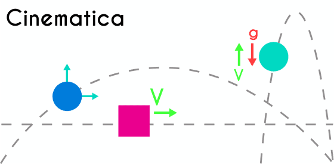
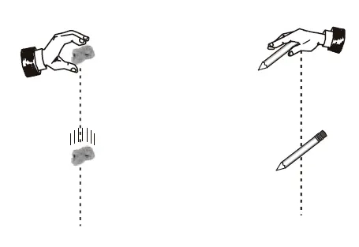
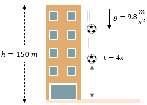
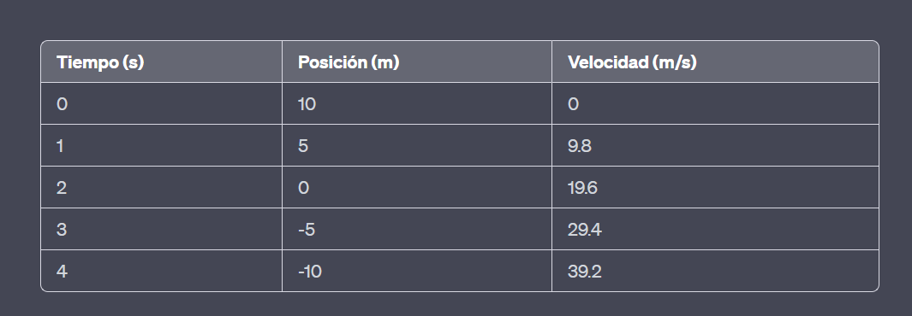
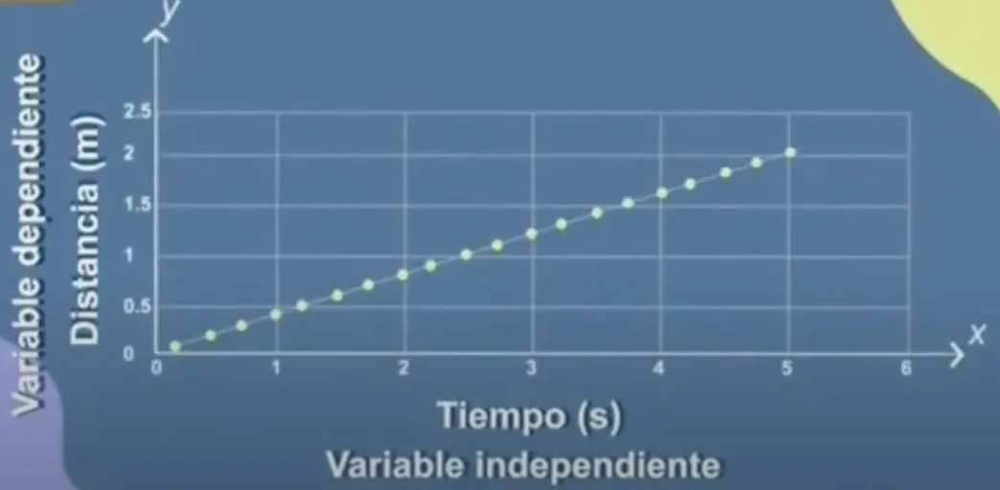
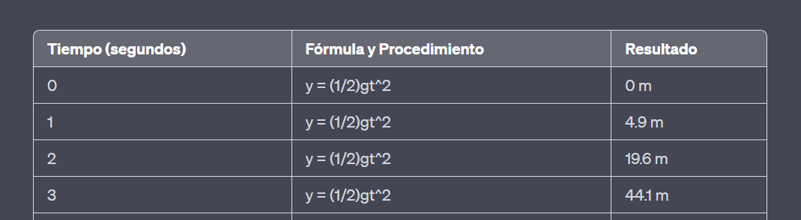
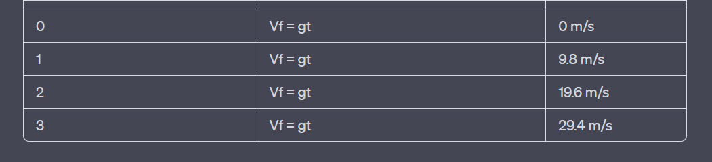

Una función es una regla de correspondencia entre dos conjuntos de tal manera que a cada elemento del primer conjunto le corresponde uno y sólo un elemento del segundo conjunto.
El dominio de una función f ( x ) es el conjunto de todos los valores para los cuales la función está definida, y el rango de la función es el conjunto de todos los valores que f toma.
El plano cartesiano está formado por dos rectas numéricas perpendiculares, una horizontal y otra vertical que se cortan en un punto. La recta horizontal es llamada eje de las abscisas o de las equis (x), y la vertical, eje de las ordenadas o de las yes, (y); el punto donde se cortan recibe el nombre de origen..
La cinemática es la rama de la mecánica que describe el movimiento de los objetos sólidos sin considerar las causas que lo originan y se limita, principalmente, al estudio de la trayectoria en función del tiempo..
El movimiento de caída libre es un tipo de movimiento en el cual un objeto cae verticalmente bajo la influencia exclusiva de la fuerza gravitatoria, sin tener en cuenta la resistencia del aire u otras fuerzas externas significativas. En este tipo de movimiento, un objeto se deja caer desde una altura determinada y su trayectoria es rectilínea y vertical hacia abajo..
En conclusión, la caída libre es un tipo de movimiento en el cual un objeto se desplaza verticalmente bajo la influencia exclusiva de la gravedad, sin la interferencia de otras fuerzas significativas. Durante la caída libre, el objeto experimenta una aceleración constante hacia abajo, conocida como aceleración gravitatoria, que en la superficie de la Tierra es aproximadamente igual a 9.8 m/s².
Aquí tienes las fórmulas principales del movimiento de caída libre, junto con una explicación de cada una y las unidades requeridas: .
Vf = gt + Vi Donde: Vf es la velocidad final del objeto. g es la aceleración debida a la gravedad (aproximadamente 9.8 m/s²). t es el tiempo transcurrido desde el inicio de la caída. Vi es la velocidad inicial del objeto (que es cero en la caída libre). Unidades: Vf y Vi en metros por segundo (m/s), g en metros por segundo al cuadrado (m/s²), y t en segundos (s)..
y = (1/2)gt² + Vi*t + yi Donde: y es la posición vertical del objeto en relación con un punto de referencia. g es la aceleración debida a la gravedad. t es el tiempo transcurrido desde el inicio de la caída. Vi es la velocidad inicial del objeto. yi es la posición inicial del objeto (altura desde la que se deja caer). Unidades: y, Vi y yi en metros (m), g en metros por segundo al cuadrado (m/s²), y t en segundos (s).
t = √(2y/g) Donde: t es el tiempo total de vuelo (tiempo que tarda el objeto en caer desde una altura determinada hasta tocar el suelo). y es la altura desde la que se deja caer el objeto. g es la aceleración debida a la gravedad. Unidades: t en segundos (s), y en metros (m), y g en metros por segundo al cuadrado (m/s²).
Estas fórmulas permiten calcular diversos aspectos del movimiento de caída libre, como la velocidad final, la posición en un instante dado y el tiempo total de vuelo. Recuerda utilizar las unidades consistentes en las fórmulas para obtener resultados correctos..


Una maceta cae desde lo alto de un edificio y tarda 3 segundos en caer. Determina la altura del edificio la velocidad con que choca contra el suelo. Escribe los datos, fórmulas, procedimiento y resultados con unidades..
💯Datos💯 : Fórmula de la altura (y) en función del tiempo: y = (1/2)gt^2 Donde: y es la altura del edificio. g es la aceleración debido a la gravedad. Fórmula de la velocidad final (Vf) en función del tiempo: Vf = gt Donde: Vf es la velocidad con la que choca la maceta contra el suelo. g es la aceleración debido a la gravedad. 💯procedimiento💯: Utilizaremos la 💯fórmula💯 de la altura para determinar la altura del edificio. Como la maceta cae desde lo alto del edificio, la altura del edificio es igual a la altura desde la cual cae la maceta. y = (1/2)gt^2 Utilizaremos la fórmula de la velocidad final para calcular la velocidad con la que la maceta choca contra el suelo. Vf = gt 💯Resultados💯: Altura del edificio: y = (1/2)gt^2 y = (1/2)(9.8 m/s^2)(3 s)^2 y = (1/2)(9.8 m/s^2)(9 s^2) y = 44.1 m La altura del edificio es de 44.1 metros. Velocidad con la que la maceta choca contra el suelo: Vf = gt Vf = (9.8 m/s^2)(3 s) Vf = 29.4 m/s La velocidad con la que la maceta choca contra el suelo es de 29.4 metros por segundo. Por lo tanto, la altura del edificio es de 44.1 metros y la velocidad con la que la maceta choca contra el suelo es de 29.4 metros por segundo.

